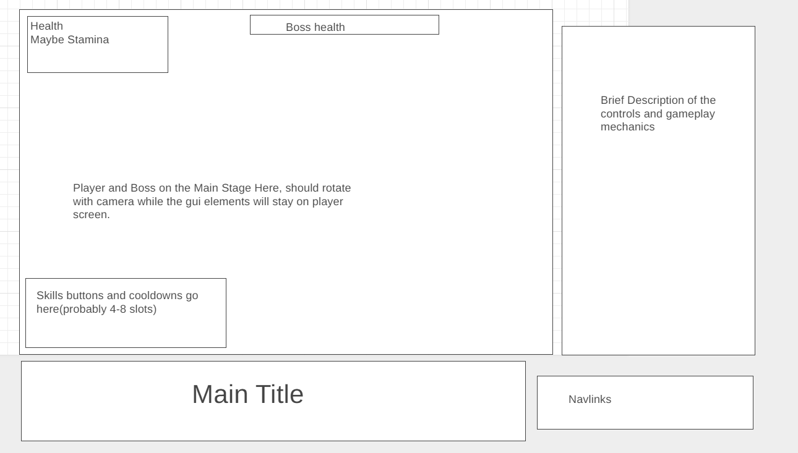

JS Project: Action Combat Boss Simulator
Background: This project is meant to simulate what an action-combat video game’s boss fight would feel like. The goal of the game is for the player to avoid attacks of an AI controlled monster while slowly chipping away at it, unlocking faster and more difficult attack patterns as the fight proceeds. Due to the nature of this game, players should expect beating the boss to take more than several attempts and gauge their performance on how much damage they dealt to the boss rather than a strict win/lose scenario. This will be displayed if and when the player loses all lives. The controls will be displayed on the side and skill cooldowns, as well as player and boss’s health, will be displayed on a gui resting on the main scene of the game.
Functionality and MVPs
Players should:
- Be able to control their character using the mouse for basic movement and the keyboard for dodging and attacking.
- Dodge clear indicators of large scale attacks from the boss
- Dodge smaller attacks that do not have indicators but rather windup animations
- Damage the boss using cooldown based skills
- Unlock faster and more deadly skills from the AI controlled monster as the fight proceeds.
This project will also include:
- An instruction section to briefly explain the controls and what to expect during the fight
- A production README
Wireframe:

- Navlink will show my Github and LinkedIn
- The control and description section will show the player the basics of moving their character and what to expect from the boss fight.
- The skills, health, and boss health gui will always appear on screen no matter the angle that the player is facing. It will be semi-transparent and appear above the main stage.
Technology, Libraries, and APIs:
- This project is expected to use the three.js library(may switch to canvas if 3D proves to be too difficult to implement in the allotted time)
- The native key-press event library will also be used for most, if not all of the play control functionality.
- Some sort of web server(most likely webpack) to pull files from to be used in three.js
- Javascript npm to control file dependencies
Implementation Timeline:
- Friday: Familiarize with the three.js library by creating some demo cubes among other objects. If I feel comfortable utilizing the three.js library, the design will follow its initial goal of being a 3D-game. Otherwise, I will refactor the game to work in 2D.
- Weekends: Mapping out classes and methods. Will create diagrams to help organize logic. After deciding what classes I’m expected to have, I will first work on setting up a proper stage(if using three.js) or start working on the logic of the player and boss class( if using canvas).
- NOTE: Rest of this is assuming I pursue three.js
- Monday: Use this day to create the player and boss class logic. Will design movement, skills, health bars, and other common elements found in action combat games. Will also implement event handlers to listen and handle clicks and keyboard presses. If time allows, will create 3D models.
- Tuesday: Finish polishing up the logics of the player and boss classes if they were not already completed. Will try to dedicate more time to creating boss models after the logic portion is complete.
- Wednesday: import the boss model onto the three.js stage we created earlier. Will attach the logic of the player and boss onto the models and perform end to end testing. If time allows, will polish up on the 3D aspect of three.js.
- Thursday: Deploy to github and revise proposal to production.
Bonus Features
- Phase change animations for boss at certain health percentage break points.
- Introduce a new model with completely new attack patterns for boss
- Introduce a stage change mechanic to make the game more interactive
- Add more types of playable character(current design only uses one)